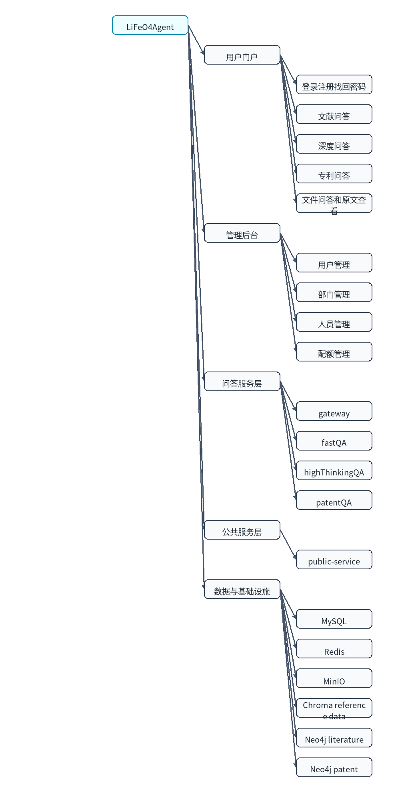
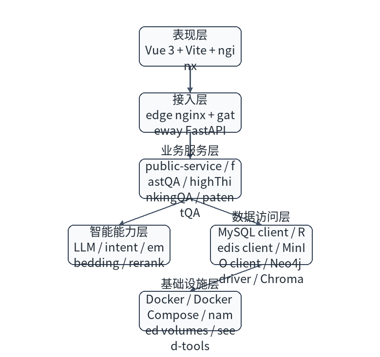
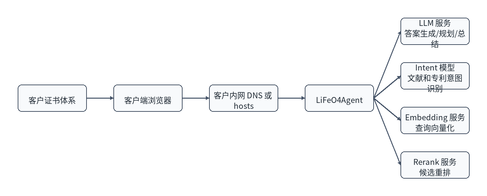
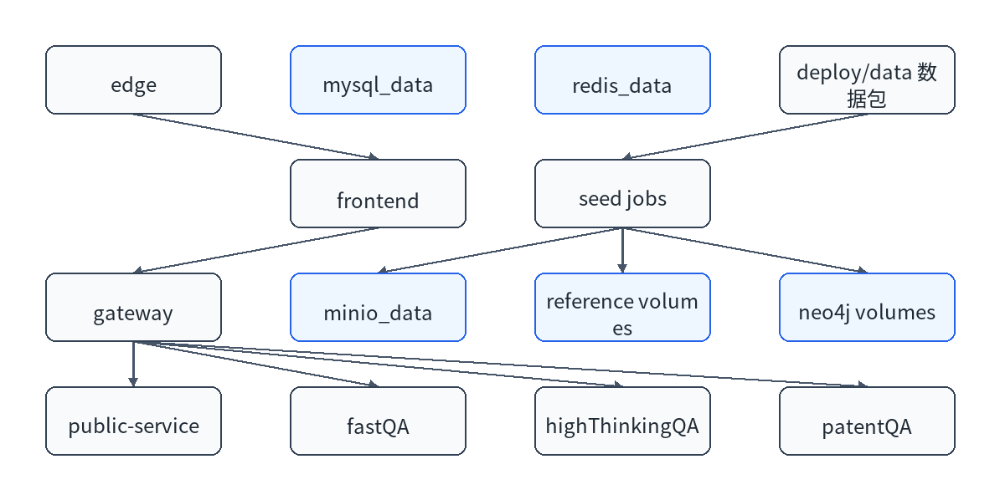
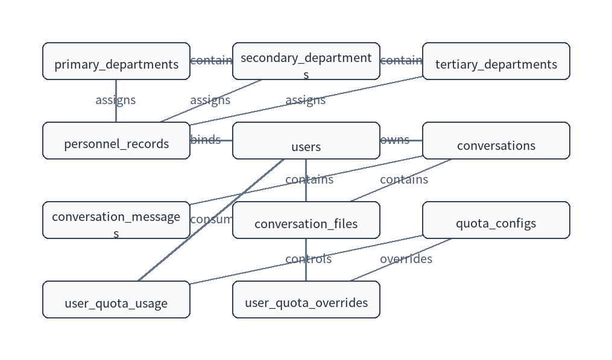
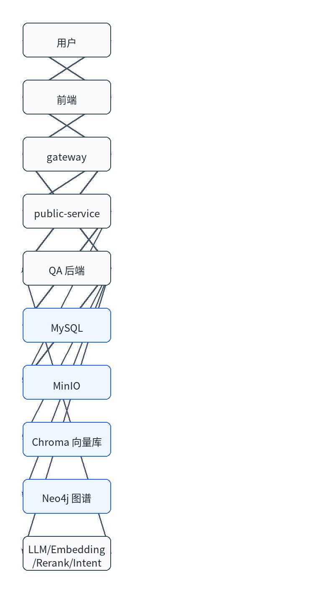

| 版本 | 日期 | 修订人 | 修订说明 |
|---|---|---|---|
| V1.0 | 2026/05/20 | 项目组 | 初版 |
本文档从宏观层面说明 LiFeO4Agent 的系统目标、总体架构、技术选型、模块划分、集成关系、部署策略、数据设计、安全和非功能设计，用于指导详细设计、开发实现、测试验收和后续运维。
本文档适用于项目组成员、测试人员、部署运维人员和业务负责人。最终用户操作说明见用户手册；部署命令和现场实施步骤见部署手册。
| 编号 | 术语 | 说明 |
|---|---|---|
| 1 | RAG | 检索增强生成，通过检索知识库内容辅助大模型回答。 |
| 2 | MinIO | 对象存储，保存论文、专利原文和运行期文件。 |
| 3 | Chroma | 向量数据库，用于文献、专利和深度问答检索。 |
| 4 | Neo4j | 图数据库，承载文献和专利知识图谱。 |
| 5 | Seed | 部署时自动导入初始数据的过程。 |
| 资料 | 说明 |
|---|---|
| 需求清单 V1.0 | 功能和非功能需求来源。 |
| 部署手册 V1.0 | 部署和数据导入方式。 |
| 开发文档 V1.0 | 工程结构和接口实现。 |
LiFeO4Agent 面向电池材料研发领域，帮助用户围绕文献、专利和上传文件进行专业问答、归纳分析和原文核对，提高研发信息检索和技术分析效率。
研发人员需要同时查询论文、专利、实验文件和知识图谱。传统检索方式存在信息分散、原文定位慢、专利表格难利用、文献和专利分析链路割裂等问题。系统通过文献问答、深度问答、专利问答和文件问答，将检索、重排、图谱和生成能力统一到一个入口。
| 目标 | 说明 |
|---|---|
| 统一入口 | 提供浏览器端统一问答和管理入口。 |
| 三类问答 | 支持文献、深度、专利三种模式。 |
| 原文可核对 | 论文和专利原文统一从 MinIO 读取。 |
| 可离线交付 | 镜像和数据包可在内网环境部署。 |
| 可增量维护 | 后续可按服务镜像或数据包单独升级。 |

| 模块 | 职责 | 交互方式 |
|---|---|---|
| 前端门户 | 提供用户操作界面。 | 调用 gateway API。 |
| gateway | 认证代理、路由、SSE、配额协调。 | 调用 public-service 和 QA 后端。 |
| public-service | 用户、部门、人员、配额、文件、原文代理。 | 访问 MySQL、Redis、MinIO。 |
| fastQA | 文献检索和生成。 | 访问 fastQA 向量库、MinIO、文献图谱和模型。 |
| highThinkingQA | 深度问答和多阶段推理。 | 访问 vectordb、MinIO 和模型。 |
| patentQA | 专利检索、tables、图谱增强和回答。 | 访问 patentQA 向量库、MinIO、专利图谱和模型。 |

| 技术组件 | 用途 | 场景 |
|---|---|---|
| Vue 3 | 构建前端页面。 | 问答首页、个人中心、管理后台。 |
| FastAPI | 构建后端 HTTP 服务。 | gateway 和各后端服务。 |
| MySQL | 持久化业务数据。 | 用户、部门、人员、配额、会话。 |
| Redis | 缓存和运行态协调。 | 会话状态、配额缓存、任务状态。 |
| MinIO | 对象存储。 | 论文、专利、上传文件。 |
| Neo4j | 图谱查询。 | 文献图谱、专利图谱。 |
| Chroma | 向量检索。 | 文献、专利、深度问答向量库。 |

| 接口名称 | 请求方 | 提供方 | 功能 |
|---|---|---|---|
| Chat Completions | QA 后端 | LLM 服务 | 生成答案、规划和总结。 |
| Embedding | QA 后端 | Embedding 服务 | 查询向量化。 |
| Rerank | fastQA、patentQA | Rerank 服务 | 候选片段排序。 |
| Intent | fastQA、patentQA | Intent 模型服务 | 识别问题意图。 |

部署采用容器化微服务方式。内部服务使用 compose service name 通信；部署方主要暴露 HTTPS、MySQL、Redis 和 MinIO 管理端口。Neo4j 地址不暴露给部署方配置，内部固定为 neo4j-literature 和 neo4j-patent。

重要业务表均包含创建时间或更新时间字段，用于增量追踪和审计。用户、部门和人员使用状态字段停用，避免直接物理删除造成历史数据失联。后续新增业务表时，应补充 created_at、updated_at 或等价增量字段；涉及删除的主数据优先使用逻辑删除或状态停用。
| 异常类型 | 处理策略 |
|---|---|
| 业务异常 | 返回明确提示，例如配额不足、账号停用、文件格式不支持。 |
| 系统异常 | 记录日志并返回通用错误，避免暴露内部细节。 |
| 外部模型异常 | 记录模型响应和请求阶段，必要时提示模型服务不可用。 |
| 数据导入异常 | seed job 失败退出，部署预检或日志中提示原因。 |
客户主配置面包括端口、账号密码、MinIO、LLM、intent、embedding、rerank 和数据包版本。内部服务 URL、Redis DB、Neo4j 地址和 worker 参数由 compose 默认值控制，避免部署方配置过多内部细节。
各容器输出标准日志，由 Docker 收集。重要日志包括 gateway 路由和配额日志、QA 阶段日志、模型调用错误、seed job 导入日志和基础组件健康检查日志。
系统仅收集账号、工号、姓名、部门、人员绑定和安全问题等使用所需信息。密码和校验码以哈希形式保存，文档和镜像不写入真实密钥。系统应按客户制度控制访问权限、定期清理不再使用的外来人员记录，并避免在日志中输出敏感信息。
| 类别 | 设计要求 |
|---|---|
| 性能 | 登录、管理类接口应快速响应；问答耗时受模型服务影响，需记录阶段耗时。 |
| 高可用 | V1.0 单机 compose 部署；后续可替换为外部高可用 MySQL、Redis、MinIO 和多实例业务服务。 |
| 安全性 | JWT 认证、管理员权限控制、内部 token、TLS 传输、密码哈希。 |
| 可维护性 | 服务拆分清晰，镜像和数据包分离，支持单服务增量更新。 |
| 可恢复性 | 运行态数据备份；reference data 和图谱可由数据包重建。 |

| 数据类型 | 产生方 | 存储位置 | 生命周期 |
|---|---|---|---|
| 账号、部门、人员、配额 | 管理员或初始化脚本 | MySQL | 运行态业务数据，需备份。 |
| 会话和消息 | 用户问答 | MySQL | 运行态业务数据，按客户制度保留。 |
| 上传文件 | 用户 | MinIO + MySQL 元数据 | 运行态数据，需备份。 |
| 论文和专利原文 | 数据包 seed | MinIO | 可由数据包重建。 |
| 向量库和图谱 | 数据包 seed | named volume | 可由数据包重建。 |
| 模型调用日志 | QA 后端 | Docker 日志 | 用于排障，不应包含密钥。 |
| 安全域 | 设计 | 说明 |
|---|---|---|
| 传输安全 | edge nginx 提供 TLS。 | 证书由部署方签发或自签，客户端需信任。 |
| 身份认证 | 用户名密码 + JWT。 | token 由 gateway 和 public-service 校验。 |
| 权限控制 | 普通用户和管理员角色。 | 管理员接口需要管理员权限。 |
| 内部调用 | 内部 token。 | gateway 与 public-service 内部接口使用内部鉴权。 |
| 密钥治理 | 密钥只写入 deploy/.env。 | 文档和镜像上下文不包含真实密钥。 |
| 数据隔离 | MinIO bucket、MySQL 用户、Docker 网络。 | 内部服务通过 compose service name 访问。 |
系统通过服务拆分和数据包分层支持后续扩展。新增问答模式时，应优先在 gateway 中增加模式路由，在独立 QA 后端中实现业务能力，并复用 public-service 的用户、会话、文件和配额能力。新增大规模数据时，应使用数据包和 seed job 交付，不应把原始数据打入业务镜像。
| 扩展方向 | 推荐做法 |
|---|---|
| 单服务代码更新 | 只构建并交付对应服务镜像，例如 lifeo4agent/fastqa。 |
| 新增向量库 | 新增独立 reference data 包和 named volume。 |
| 新增图谱 | 新增 Neo4j dump 包和独立 Neo4j 服务或数据库。 |
| 替换模型服务 | 只修改 deploy/.env 中 base url、模型名和 key。 |
| 高可用改造 | 将内置 MySQL、Redis、MinIO 替换为客户已有高可用中间件。 |